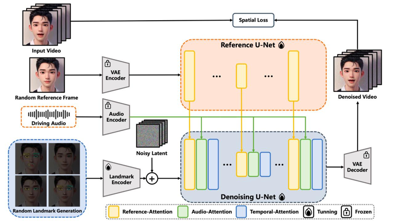

В сети появился OpenSource инструмент, позволяющий получать из фотографии или рисунка видео говорящего человека. А так же неплохо анимируются животные. Технология называется EchoMimic, и ее официальная страница находится здесь:
https://badtobest.github.io/echomimic.html
EchoMimic разработан на базе генеративных моделей проекта Stable Diffusion, а для распознавания аудио изменения характеристик лица используются дополнительные модули, такие как:
На вход нейросети подается начальное статическое изображение (картинка) и запись голоса, а на выходе появляется видео с анимацией. Нейросеть самостоятельно распознаёт лицевые маркеры: она отслеживает положения глаз, бровей, носа и губ.

Тестирование модели показали, что EchoMimic работает лучше и быстрее похожих решение, таких как AniPortrait и SadTalker. Самое главное, что EchoMimic можно запустить локально. Разработчики рекомендуют использовать не менее 16Гб видеопамяти, однако нейросеть будет работать и на меньшем объёме памяти (но тогда увеличивается время генерации). Инструкция по установке размещена на GitHub:
https://github.com/BadToBest/EchoMimic
Для работы используется Centos Linux или Ubuntu Linux и драйвера CUDA версии от 11.7. Работа системы подтверждена на ускорителях RTX4090D (24G), A100 (80G) , V100 (16G). На GitHub лежат только исходники. Веса нейросетей надо брать по следующей ссылке:
https://huggingface.co/BadToBest/EchoMimic/tree/main
Текст (англ.) исследовательской работы разработчиков в формате PDF так же доступен для прочтения.